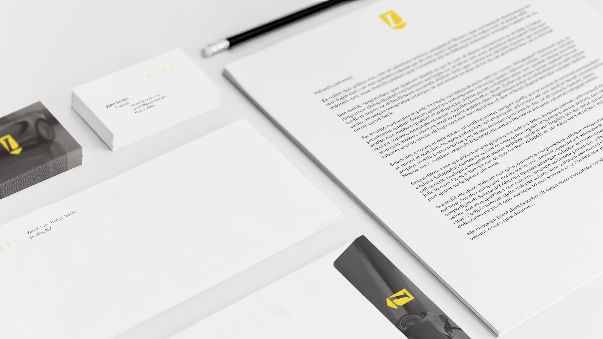
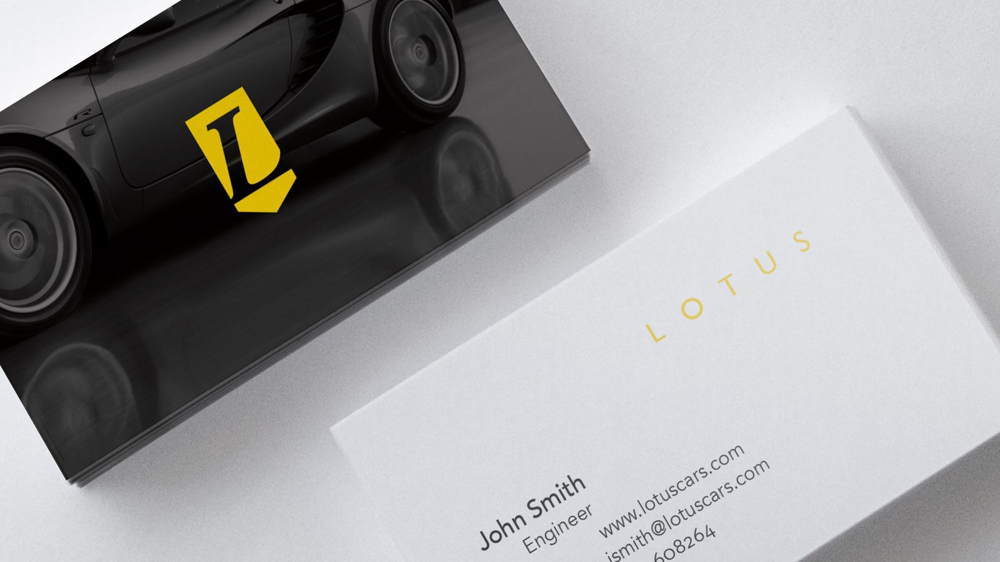

Lotus Cars Identity
A rebranding project for a university graphic design course. I rebranded Lotus Cars to compete with fellow European high-class car companies.

After extensive research of British design and past car logos, I explored several different iterations of possible logos. The final design features an L with a subtle shield contour.

Typography plays a main role in the new identity. A bold, italic Caslon
L combines with Gill Sans for a true British design. Avenir body text with old-style numerals provide just the right amount of variance for a subtle, controlled composition.
If you like this project, please consider contacting me!